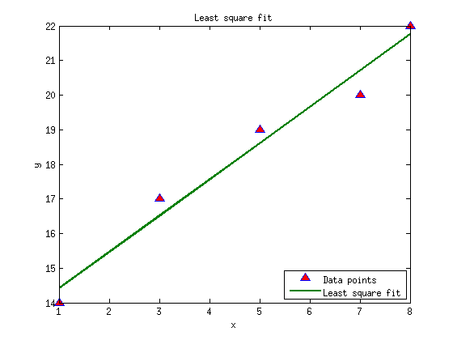

Least Square Assignment - Extra credit - (a) solution
clear all clc % Write a code that will find the least squares linear fit for given data % points x = [1 3 5 7 8 ]; y = [14 17 19 20 22]; % Plot the data points and the fit line on the same plot such that the data % points are triangles with blue sides and with red center, and plot the % fit line in dark green color with line width 2. % Make sure to include all axes labels, legend and title for your plot. yfit = polyval(polyfit(x,y,1),x); % find 1st order polynomial fit in a least squares sense, and evaluate the the polynomial at points of x plot(x,y,'^','MarkerFaceColor','r','MarkerSize',8) % plot the data points hold on plot(x,yfit,'Color',[0 0.5 0],'LineWidth',2) % plot the linear fit set(gca,'FontSize',10) % set the font size for label, legend, title... title('Least square fit') legend('Data points','Least square fit'),legend('Location','SouthEast') xlabel('x'), ylabel('y')
